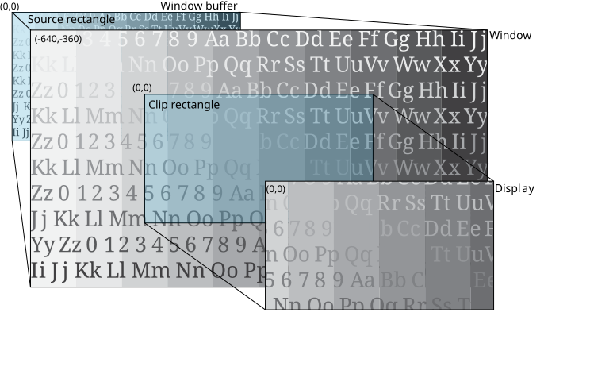

To zoom in as the parent of a window, make the window larger and set your clip rectangle size.
Screen uses the default position of (0,0) as the top left corner of your window, your display, and your clip rectangle.
In this example, let's target a rectangular area in the center of the window for display. Consider the following properties:
| Property | Window | Value |
|---|---|---|
| SCREEN_PROPERTY_SIZE | Parent | 2560x1440 |
| SCREEN_PROPERTY_POSITION | Parent | (-640,-360) |
| SCREEN_PROPERTY_CLIP_SIZE | Parent | 320x180 |
| SCREEN_PROPERTY_CLIP_POSITION | Parent | (0,0) |
| SCREEN_PROPERTY_BUFFER_SIZE | Owner | 1280x720 |
| SCREEN_PROPERTY_SOURCE_SIZE | Owner | 1280x720 |
| SCREEN_PROPERTY_SOURCE_POSITION | Owner | 1280x720 |
To set these properties, use the corresponding window property with the Screen API function, screen_set_window_property_iv():
screen_window_t screen_win; /* your window */
int win_size[2] = { 2560, 1440 }; /* size of your window */
int win_clipsize[2] = { 1280, 720 }; /* size of your clip rectangle */
int clippos[2] = { 0, 0 }; /* position of your clip rectangle */
...
screen_set_window_property_iv(screen_win, SCREEN_PROPERTY_SIZE, win_size);
screen_set_window_property_iv(screen_win, SCREEN_PROPERTY_CLIP_SIZE, win_clipsize);
screen_set_window_property_iv(screen_win, SCREEN_PROPERTY_CLIP_POSITION, clippos);
...
SCREEN_PROPERTY_BUFFER_SIZE, SCREEN_PROPERTY_SOURCE_SIZE, SCREEN_PROPERTY_SOURCE_POSITION_SIZE are owner window properties. Typically, your parent window sets the window and the clip rectangle sizes only.

The parent window can't change either the size of the window buffer or the size of the source rectangle. Therefore, to achieve a zoom-in effect, the parent window makes the window size larger. By doing so, the source is scaled up to fit the larger window size.
The clip rectangle is the same size as the display so that the result displayed is only the content from your window that's inside the clip rectangle. The resulting image gives the appearance of zooming in on your original source image.